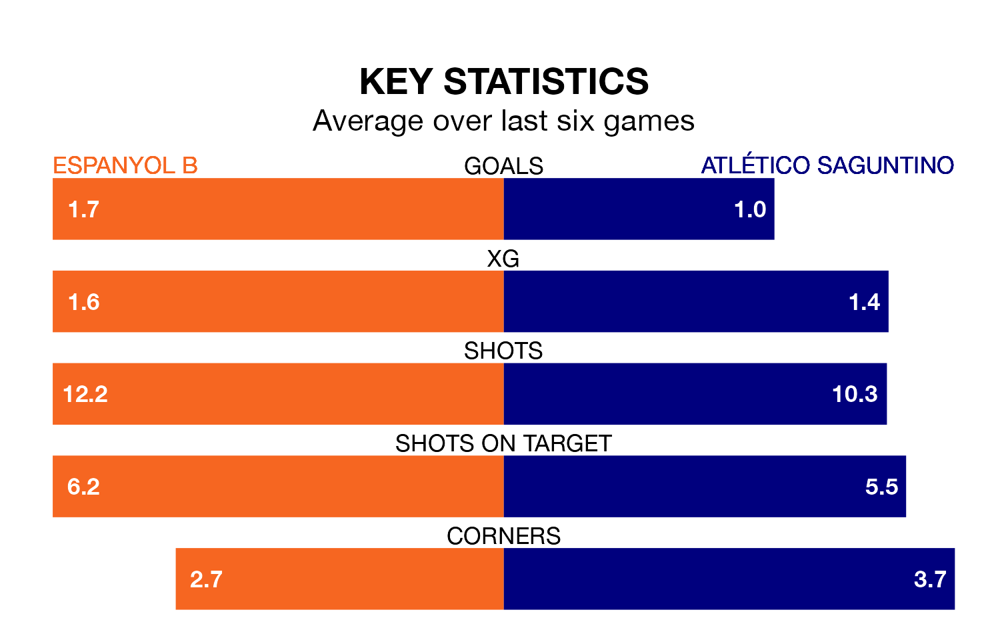

Espanyol B are heavy favourites to keep all three points at home in Sunday's late kick-off against Atlético Saguntino.
Espanyol B, who sit 12th in the Segunda División RFEF Group 3 with 21 games played, are priced at 1.6 to seal victory at Ciutat Esportiva Dani Jarque.
Sitting two places behind them in the table, Atlético Saguntino are 4.6 to win with *Betting Company*, while the draw is at 3.6.
With 22 goals in 21 games so far this season, Atlético Saguntino are scoring at below the league average rate with 1.0 goals per game. And they are conceding more than average, letting in 27 goals at a rate of 1.3 per game.
Espanyol B are also below average scorers, with 1.1 goals per game, compared to a league average of 1.2. They have conceded 1.2 goals per game.
The home side are in mixed form in the Segunda División RFEF Group 3, with two wins and four draws from their last six games.
With two wins and a draw over that period, the visitors' form is worse – they have taken seven points from 18, compared to Espanyol B's 10.
In the last three years, Espanyol B and Atlético Saguntino have played each other on three occasions. Atlético Saguntino won one of them and they drew the other.
Their last meeting was on October 1, when Atlético Saguntino won 3-1 at home.
Espanyol B's last match was on February 4, a 2-2 draw against UD Alzira.
Atlético Saguntino beat Lleida Esportiu 1-0 last time out, also on February 4.
Updated: 10:28 (UTC), 06/02/24